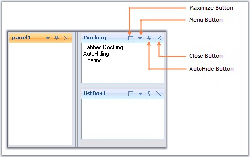

The buttons available for the docked control and the properties which controls the visibility of the button are discussed in this section.

Figure 59: Buttons for the Docked Control
Menu Button
The menu button in a docked control can be made visible or hidden by setting the MenuButtonEnabled property to true. Clicking this button will display the context menu items.
Maximize Button
Maximize button can be enabled by using the MaximizeButtonEnabled property. This maximize button allows users to maximize / restore a docking window, so that a clear view of the contents can be made visible.
 Note: The Maximize button will be visible
only if any other control is docked to the bottom of the former
control.
Note: The Maximize button will be visible
only if any other control is docked to the bottom of the former
control.
Close Button
The visibility of the Close button can be controlled using the CloseEnabled property.
AutoHide Button
Setting AutoHideEnabled property shows or hides the auto hide button in the docked control. Clicking this button will autohide the docked controls.
Note:
Docking Manager let you customize the above default buttons and also add
custom caption buttons. See Custom Caption Buttons for more
details.
See Also